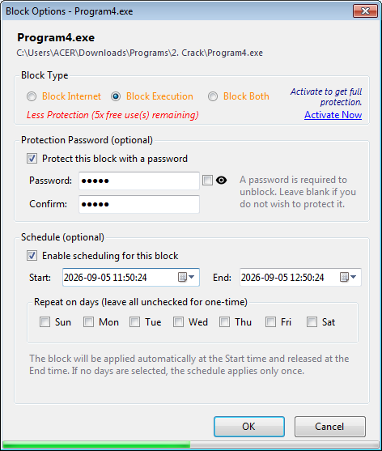
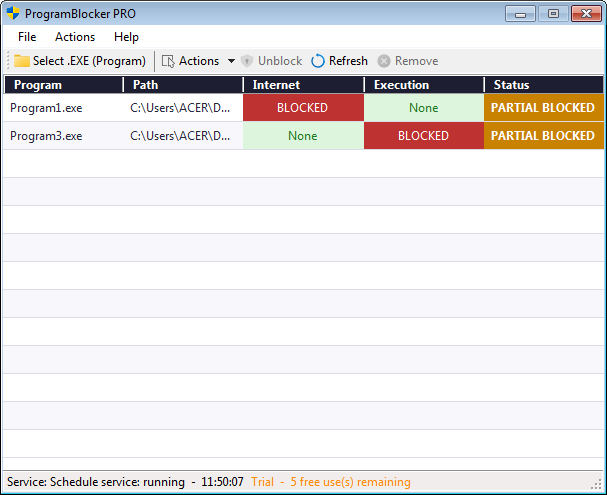

ProgramBlocker Pro - Full Control Over Programs, Internet & Execution
ProgramBlocker Pro is a Windows software that acts as a gatekeeper for the programs on your computer. With this software, you can decide which programs are not allowed to access the internet, which programs are not allowed to run, or both at once. The Pro edition adds anti-bypass layered file blocking so users cannot work around the block by renaming, moving, or deleting the protected executable.
Imagine you have a child who often plays a certain game and forgets study time. With ProgramBlocker, you can block that game so it can’t be launched, or limit its internet access only. You can also schedule the block to be active only at certain times — for example, the game can only be opened on weekends.
What Is ProgramBlocker PRO?
ProgramBlocker PRO is a Windows software that acts as a gatekeeper for the programs on your computer. With this software, you can decide which programs are not allowed to access the internet, which programs are not allowed to run, or both at once.
Imagine you have a child who often plays a certain game and forgets study time. With ProgramBlocker, you can block that game so it can’t be launched, or limit its internet access only. You can also schedule the block to be active only at certain times — for example, the game can only be opened on weekends.
This Software is suitable for:
- Parents who want to limit their children’s access to specific programs or games.
- Internet cafe / PC rental owners who want to lock certain programs so they can’t be accessed by other users.
- Office employees who want to focus by blocking social media or games during work hours.
- Anyone who wants to protect their computer from unwanted programs.


Differences Between Trial and Pro
| Features | Trial (Free) | Pro (Paid) |
|---|---|---|
| Block Internet | ✓ 10 uses |
✓ Unlimited |
| Block Execution | ✓ 10 uses |
✓ Unlimited |
| Layered File Blocking (anti-rename, anti-move, anti-delete) | ✗ No |
✓ Unlimited |
| Number of Block Uses | ✓ 10 uses |
✓ Unlimited |
| Block Scheduling | ✓ Limited |
✓ Unlimited |
| Upgrade Reminder | ✓ Yes |
✗ No |
| Password for Blocks | ✓ Limited |
✓ Unlimited |
| Right-Click Menu in Explorer | ✓ Limited |
✓ Unlimited |